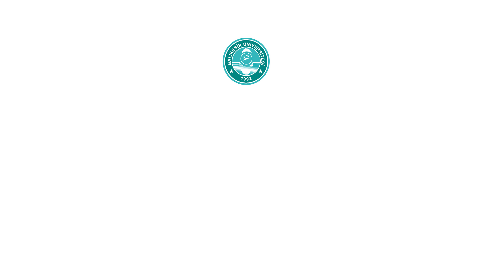
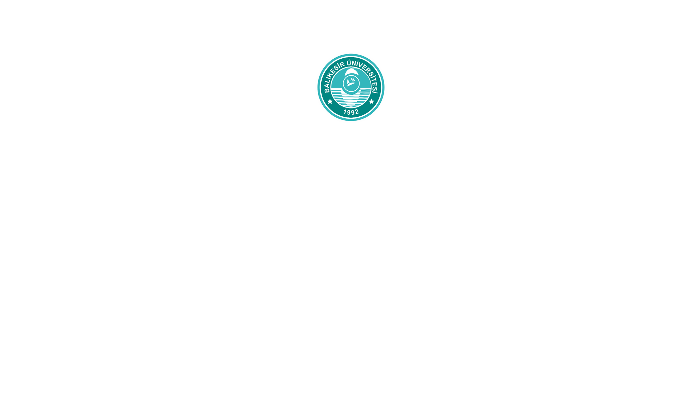
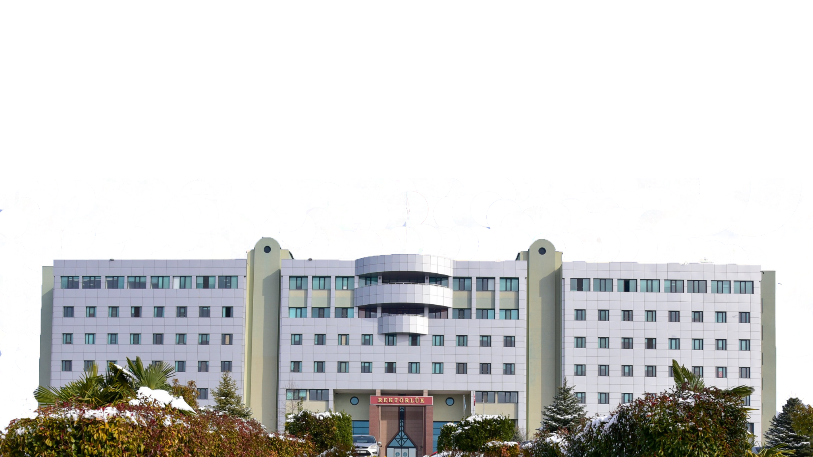
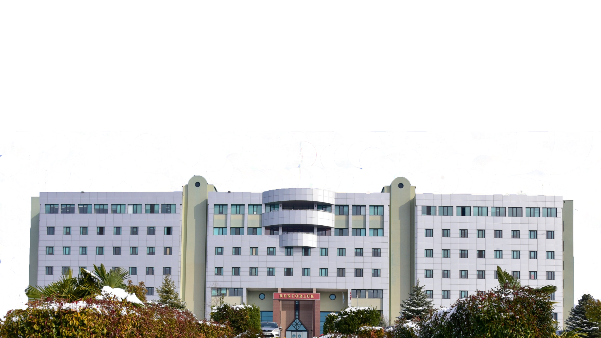

 

History the our university
Balıkesir University
...
The foundation of Balıkesir University dates back to Karesi Teachers' School, which was founded in 1910. With the special interest of the then Minister of National Education, Mustafa Necati Bey, this school was moved to the building that operates today as Necatibey Education Faculty in 1932 and was named Necatibey Teacher Training School. Necatibey Teacher Training School continued to train teachers under the name of Necatibey Education Institute between 1932 and 1982; In 1981, it was removed from its three-year status and became a 4-year "Higher Teacher Training School" status; In 1982, it was affiliated with Uludağ University and this institution was named Necatibey Faculty of Education.
Likewise, with the Decree Law No. 41 in 1982, other higher education institutions in Balıkesir; Balıkesir School of Management and Tourism, under the name of Balıkesir School of Tourism Management and Hotel Management; Balıkesir State Engineering and Architecture Academy is also affiliated with Uludağ University under the name Balıkesir Engineering Faculty. Balıkesir Vocational School, the other institution affiliated with Uludağ University, continued its activities under the same name. These institutions, which have remained under the roof of Uludağ University for ten years, have created a strong infrastructure for Balıkesir University with a healthy and stable development. Balıkesir University was established in accordance with the law no. 3837 published in the Official Gazette no. 21281 dated July 11, 1992; It gained legal personality on January 1, 1993.
Balıkesir University, with its strong development, has also given the opportunity to the birth of a new university within its structure. The designated academic units of Balıkesir University formed the infrastructure of Bandırma Onyedi Eylül University, which was established in 2015.
...